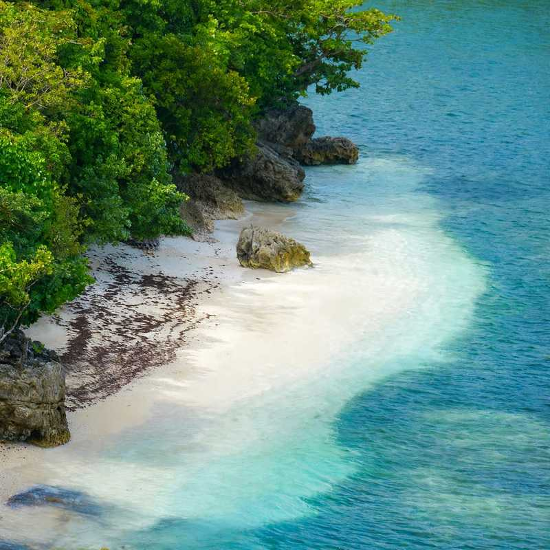

Sipalay sits in the far south of Negros Occidental, a long ride from Bacolod. Most visitors come for its quiet coves, but the trip has a second draw that needs more planning: Danjugan Island, a 43-hectare nonprofit sanctuary with five lagoons, a bat cave and fringing reefs.
Here is the detail that trips people up. Danjugan is not in Sipalay. The boats leave from Barangay Bulata in the neighbouring town of Cauayan, from a pier called Antol Danjugan Port, and you cannot turn up and ask for a ride. Visits are booked in advance through the island's foundation, which sets the schedule and the fees.
This guide covers what each Danjugan package costs right now, how to reach the pier from Cebu or Dumaguete, how to split your time between the beaches and the island, and when the seas are most likely to cooperate. If you only have the beaches in mind, the shorter white sand beach of Sipalay post is a good companion.

What You Are Booking at Danjugan
The island is run by the Philippine Reef and Rainforest Conservation Foundation as a conservation project, not a resort. Visitor numbers are kept low, the guides are conservationists, and the fees go toward running the sanctuary. Expect shared solar power, shared fresh water, no hot showers and no air-conditioning.
Packages and rates
The foundation offers four options, priced per person with the conservation fee built in (rates as of its April 2026 update):
Discover Danjugan is the three-hour tour at PHP 1,650. Daytrip runs roughly 8:30 AM to 4:30 PM at PHP 2,750 and includes lunch and snacks. Overnight stays are PHP 3,950 at Moray Lagoon Camp, which has open-air cabanas with mattresses, mosquito nets and shared bathrooms, or PHP 5,000 at Typhoon Beach Camp, which has private rooms with their own bathrooms and Starlink wifi. Overnight rates include meals, boat transfers and guided activities such as snorkelling, kayaking, trekking and birdwatching.
Seniors and PWD who are Filipino citizens get 20 percent off, children aged 7 to 12 pay half and children six and under are free. Only one discount applies per guest.
Rules that affect your plans
Boats pick up day guests at 8:30 AM, and anyone more than 15 minutes late has to hire a separate boat for PHP 1,500. Cancellations are not refunded for any reason, though you can reschedule within a year, and a Coast Guard advisory or gale warning cancels the visit automatically. Book through the form on the foundation's visit page, and keep a spare day in your schedule. Pets, bonfires and loud noise are not allowed, and there is no ATM on the island, so bring cash for anything extra.
A guided visit typically takes in Moray Lagoon, a bat cave with a colony of fruit bats and Turtle Beach, where sea turtles nest during the rainy months. Wear shoes you can walk in, pack reef-safe sunscreen and carry a refillable bottle.
How to Get There
From Cebu
The quickest route is a nonstop flight from Mactan-Cebu to Bacolod-Silay, about an hour, with Cebgo and Philippine Airlines. From the airport it is roughly 18 to 20 kilometres to the Ceres South Terminal in Bacolod, where buses to Sipalay or Hinoba-an leave. Buses take around four to five hours and vans about three to four. Expect to pay roughly PHP 250 to PHP 300, and confirm the fare at the terminal.
The slower alternative is the Lite Shipping roll-on roll-off ferry from Toledo to San Carlos, about two hours and priced from PHP 440, followed by a long road leg to Bacolod. It adds hours, so it suits travellers who want to see more of Negros rather than reach Sipalay fast. If you are heading to the pier for Danjugan, tell the driver to drop you at Antol Danjugan Port in Bulata, which comes before Sipalay town.
From Dumaguete
Public transport goes by bus to Kabankalan, then another bus or van to Hinoba-an or Sipalay, and the total is commonly five hours or more. A private car taking the coastal road through Bayawan is closer to three to four hours. If you are still working out how to reach Dumaguete, see Cebu to Dumaguete by sea or road.
Sipalay Beaches and Where to Base
Punta Ballo is the practical base. It has a string of dive resorts, a long beach and sunsets, and it is a short tricycle ride from town. Sugar Beach is quieter and takes more effort: a tricycle to Barangay Nauhang, then a small boat of about 15 minutes. Expect around PHP 50 a head on a shared boat and a few hundred pesos for a private one, so ask your resort to arrange it. Poblacion Beach is the town beach, with a food park nearby that is known for chicken inasal.
Other stops worth a tricycle tour include Tinagong Dagat, a cluster of vegetated islets, and Campomanes Bay. Island hopping around Punta Ballo starts at about PHP 550, and tours out of Bulata start higher. Check prices with your resort before you commit.
When to Go
October to June is the more comfortable window, and March to June is the busiest stretch at Danjugan. The rainy months bring rougher water, which is when cancellations pile up. Weekdays are quieter than weekends, and you should book the island first, then fit the beaches around it.
A Rough Budget
These are estimates, not quotes. A Danjugan daytrip is PHP 2,750, the Bacolod bus is around PHP 250 to PHP 300 each way, and a Cebu to Bacolod flight varies by date. That is about PHP 3,300 to PHP 3,350 per person for the bus legs and the island day before flights, lodging and meals. Add a night or two at Punta Ballo or Sugar Beach, plus a boat or tricycle tour, and a four-day trip from Cebu lands in mid-range territory.
Is the Long Trip Worth It?
If you have a weekend, Moalboal or Bohol will give you more beach per hour of travel. Sipalay rewards people who can give it four days: one to arrive, one for the island, one or two for slow beach days, and one to get back. The distance is also why the reefs and coves still feel unhurried. Go in the drier months, book Danjugan early and carry cash.